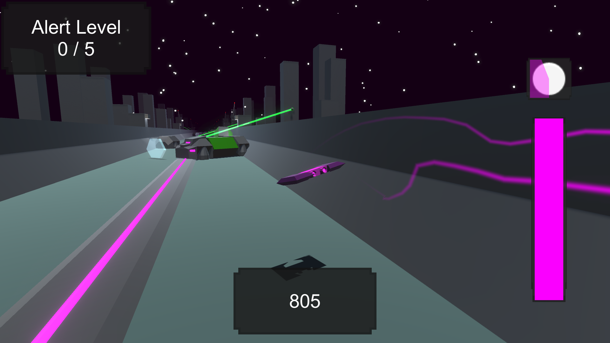

Frone
A retro-futuristic endless runner, the player needs to dodge obstacles and get as far as possible.
Project
Frone is probably my biggest project, with different areas, drone customisation, factions to support and more.
This game is still in development, there are still a lot of placeholder models.
Gameplay

At this stage in development, there is only one gamemode: the endless mode, the player needs to get as far as possible while the drone accelerates.
The game ends when the player crashes by falling off the level or colliding with an obstacle.
Drones and customisation

there are a lot of drones in the game that the player can collect, the player can pick the primary, secondary, detail and energy colors of these drones.
Each drone has its own ability, the player can use these abilities to survive longer.
Factions and reputation

The game starts a few years after an alien invasion, some small groups of survivors are still fighting back, these factions can be supported by the player.
All factions have thier own methods and motivations, which means that not all factions get along well.
Factions can be Allies, Neutral or rivals to eachother. Even though the factions won't fight eachother during the alien invasion, the player will still reputation with rivals of the supporting faction.
The player can support one faction at a time, the player will gain reputation with the supported faction and its ally and lose some to the supported faction's rival.
Reputation can be earned by playing the game while supporting a faction, reputation can then be spent at that faction to buy new drones.
Future updates

Frone is still in development, some features that will be added in the future are:
-Main menu rework: In the current main menu, the player can navigate by clicking buttons, I want the player to be able to walk around in his/her ship in first person to make the game more immersive.
The player can start missions, manage factions, customize drones and other things by interacting with the consoles and systems in his/her ship.
-missions update: A new gamemode were the player is given a challenge to complete on a limited track.
There will be multiple challenges available, like picking up an item, destroying something or finishing the track under a certain time.
The mission will end at the end of the track, the player's ship will land there to allow the player to fly back in, if the challenge is completed, the mission will be a success and the player will recieve rewards.